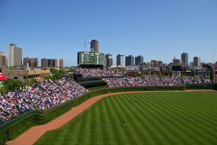
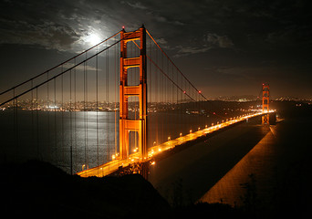

Sports are something I have a strong passion for. I've always been raised with sports as my whole family are avid fans as well. Growing up, I was raised to be a die hard Chicago fan. Wether that be the Bulls, Bears, or Cubs, I will always support the teams from the city of Chicago. My favorite sport is football. I played football from the third grade all the way up to high school. My last season was my junior year unfortunately because I got injured during the season and was unable to get medically cleared for my senior season. This year was huge for me as a sports fan because the Chicago Cubs won the World Series! This was wild because the Cubs haven't won a World Series since 1908! Hopefully the Cubs won't have another world series drought as long as the last one. Here is a picture of Wrigley Field, home of the Chicago Cubs.
Traveling has always been a big interest of mine. I personally want to travel to and visit as many different places I can by the time I die. I have only been out of the country twice. I have visited India to visit some family once when I was a fourth grader. India was a whole different world. The country was beautiful, but also much more hectic and crowded than it is here. I have also been to the Bahamas once. The bahamas is a very beautiful country with very nice beaches. My favorite place that I have visited in the United States would have to be San Francisco, California and the Bay area. The Northern California area is very scenic with its sights and also the mountains being in the backdrop of everywhere you look. The Golden Gate Bridge is also a wonderful sight to behold. Here is a picture of the Golden Gate Bridge.
